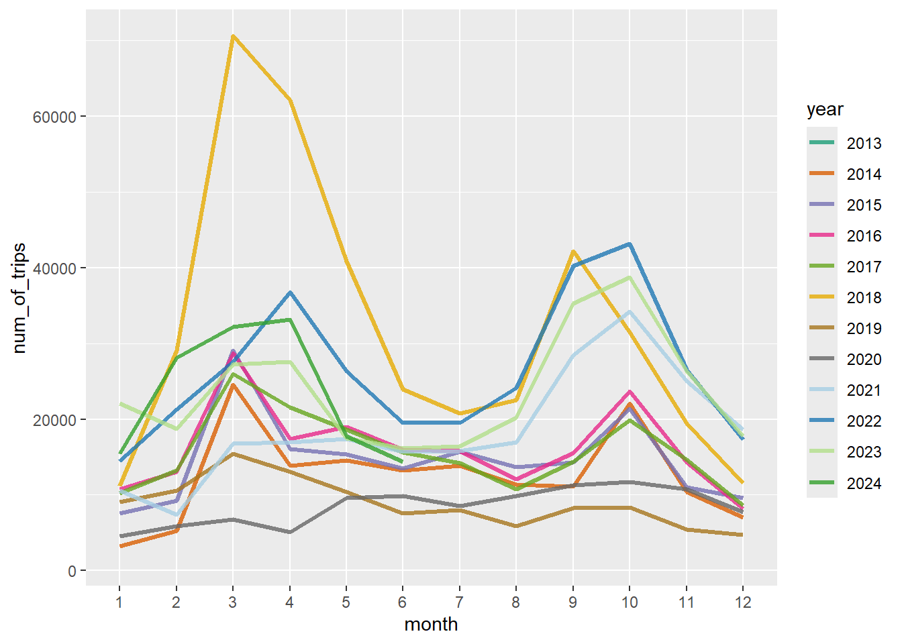
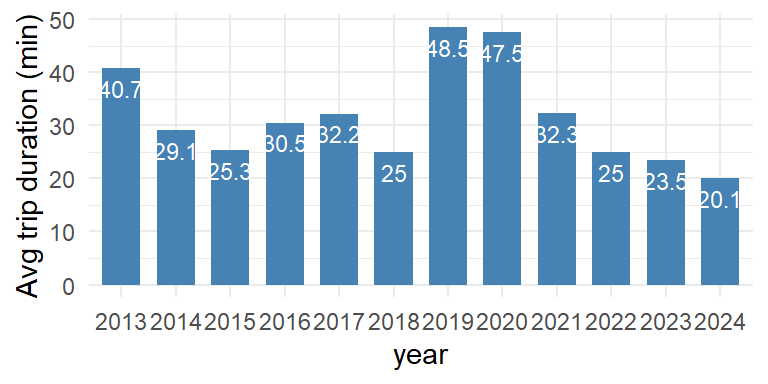
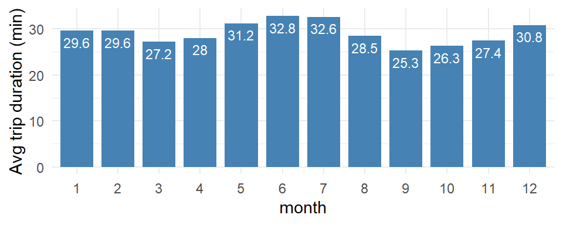
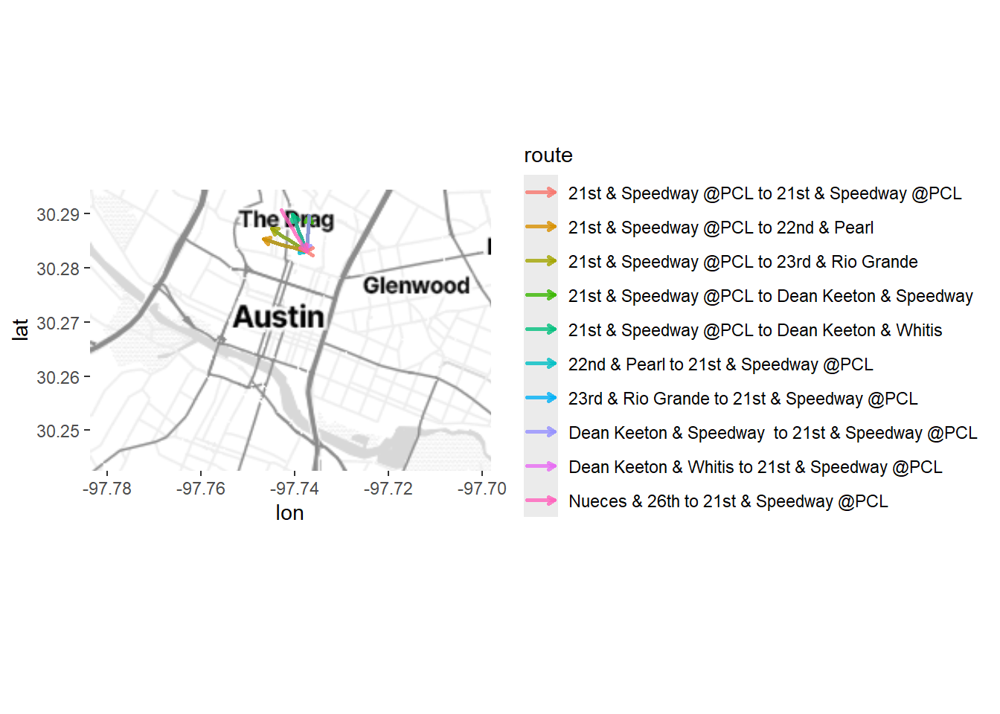
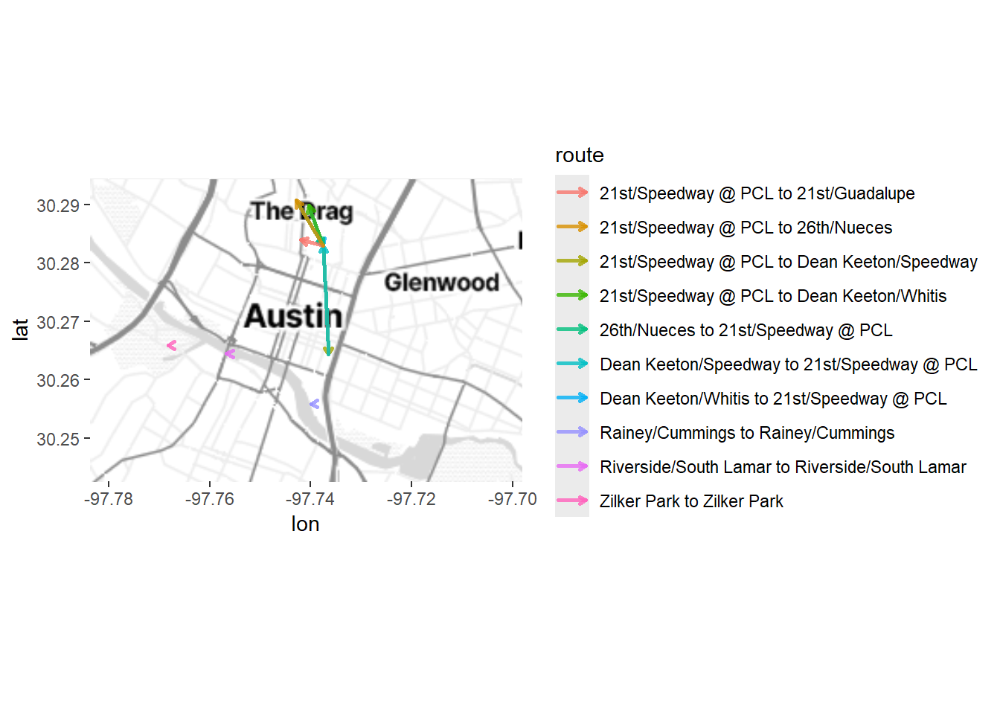

FinalProjectPaper
1. Introduction
1.1 Topic
This project analyzes the usage of the Austin Metro BikeShare, the bike-sharing program of Austin, TX. There are 3 main inquiries of focus:
The distribution of bike stations across the city of Austin and their capacity.
The usage of Austin BikeShare and whether the usage is dependent on the month in the year and whether it changes across years.
The usage of the bikesharing system across user types.
Austin, TX is currently expanding their bikeshare program with a $21 million investment. Using these inquires, city developers can determine where area where new docking stations are needed and where there is no existing stations. Furthermore, city officials can understand their user demographic (subscribers or single user) better and when during the year bikes are used more than others.
1.2 Source of Data
The data used for this project is “Austin Bikeshare”, a public database from Austin, TX hosted on Google BigQuery. There are two 2 tables in this dataset: “bikeshare_stations,” which includes the locations and the number of bikes that can be docked at a given station of the 82 active bike stations, and “bikeshare_trips,” which include data from 2.27 million bike trips taken from 2013 to 2024. The trip date including the start and end times, duration, start and end stations, and the user type are the variables that are used in this study.
1.3 Github Repository, Packages, maps
The link to the GitHub repository is: https://github.com/ashanijay/SURV727.
The main R packages used in this study are DBI, ggplot, ggmap, and dbplyr. Stadia Maps is used for map visualizations.
2. Analysis
2.1 Bike Station analysis
To begin,the data is accessed via a connection to BigQuery using DBI’s dbConnect function.
The number of bike stations that are active in the city of Austin are identified. This is defined as I first checked how many working bike stations there are, defined as stations that have a non-zero number of bikes and are available for renting and returning bikes.
| f0_ |
|---|
| 82 |
There are 82 working bike stations currently. The proposed exapansion in the city of Austin will add an additional 1000 bike stations.
These bike stations are visualized below using ggmap.
From Figure 1, we can see that as of 2019, bike stations are mainly in downtown Austin. They are also some stations in Zilker Park and the UT Austin campus. There is one in the far West part of the city and a couple in the far East part of the city.
Most bike stations have a capacity of 13 or fewer bikes. These are the purple stations in the map. The orange stations are those that have 15 or bikes at the station. There are more of these in the north part of the city in “The Drag.”
The mean number of bikes per station is 13.46, and the median is 13, suggesting again that most bike stations are small with exception of a few larger stations where the number of bikes is closer to 20.
2.2 Analyzing the number of trips taken across years and months
Next, the number of bike trips taken by month and by year are analyzed. Figure 2 below shows the result.
There are three things that are of note from Figure 2.
2019 and 2020 had the lowest number of trips. A possible reason for this could be the COVID-19 pandemic where individuals were not going to work and not traveling.
The number of trips increased year by year from 2013 to 2018. 2021-2023 there is another increase in the number of trips post the COVID-19 pandemic. The reason is likely twofold: over time more people started to know and use the shared bikes, and the bike program continued to expand their coverage and capacity, attracting more new users.
There is an apparent seasonal difference in terms of number of trips. There are two peaks. Once between February and May and another between September and November. This is when there are more moderate temperatures in Austin. It is very warm in the summer and in the winter, it may be too cold to bike.
2.3 Analyzing the time taken number of trips taken across years and months
Another factor to look at is the duration of trips. Figure 3 and Figure 4 below show the average trip duration (in minute) by year and by month.


From Figure 3 and Figure 4, we can two things:
The average trip duration decreased over the yearsfrom 2013 to 2015 and then held fairly steady until 2019. When we were in the COVID-19 pandemic, the duration of the trips increased dramatically, nearly double that of 2018. (Note: 2024 is missing the last month and a half of the year as we are still in 2024. )
There is a slight seasonal difference in terms of trip duration. The summer months have longer average trip duration (31 -33 minutes per trip) compared to the rest of the year save for the month of December (25-30 minutes per trip).
2.4 Bike trip analysis – user types
Besides year and month, another interesting variable is whether the bike trip is made by a “subscriber”, who holds an annual, monthly, or a student ridership plan, or a “single user”, a person who either uses a day pass, a weekend pass, or a single trip ticket. There are 74 classifications of riders in this data. Using descriptions of the different riders the 74 classifications were collapsed into these two groups.
From the queried result above, we can see differences among subscribers and single users (and weekender) customers in terms of their bike usage. First, subscribers took fewer bike trips than customers – about 1.5 times more. Second, the trips taken by single users on average were around 34.8 minutes, while the trips taken by subscribers were much shorter on average 20 minutes; the difference in the average trip duration is around 15 mintues.
These differences are likely associated with the different purposes of trips: subscribers likely use the trip for commuting or short-distance connecting, while the customers are more likely to be tourists or occasional users who bought a day pass or single ride pass and used the bike to go around the city, and hence the longer trip duration.
2.4 Popular Bike Routes
Next, I analyzed the popular shared bike “routes”, defined as different combinations of a start station (where the bike was rented) and an end station (where the bike was returned). Below is the result of the top 20 most popular routes, their number of trips and average trip duration.
| route | num_trips | duration |
|---|---|---|
| 3795 to 3798 | 25891 | 9.2 |
| 3798 to 3795 | 23796 | 13.4 |
| 3798 to 3798 | 19850 | 28.2 |
| 2575 to 2575 | 18290 | 53.2 |
| 3838 to 3798 | 16477 | 13.0 |
| 2574 to 2574 | 15430 | 57.9 |
| 2707 to 2707 | 14919 | 60.6 |
| 3798 to 2498 | 14592 | 7.5 |
| 3798 to 2547 | 13578 | 8.7 |
| 3798 to 3838 | 13455 | 20.4 |
| route | num_trips | duration |
|---|---|---|
| Dean Keeton/Whitis to 21st/Speedway @ PCL | 17672 | 8.4 |
| 21st/Speedway @ PCL to Dean Keeton/Speedway | 16301 | 7.4 |
| 21st/Speedway @ PCL to Dean Keeton/Whitis | 16116 | 12.7 |
| Zilker Park to Zilker Park | 14753 | 58.7 |
| Dean Keeton/Speedway to 21st/Speedway @ PCL | 14504 | 7.9 |
| 21st & Speedway @PCL to Dean Keeton & Speedway | 14235 | 10.3 |
| Dean Keeton & Speedway to 21st & Speedway @PCL | 13543 | 10.4 |
| 26th/Nueces to 21st/Speedway @ PCL | 12179 | 11.5 |
| Riverside/South Lamar to Riverside/South Lamar | 9764 | 52.5 |
| 21st/Speedway @ PCL to 21st/Guadalupe | 9762 | 8.4 |
From the table, we can see that:
There are some “routes” that share the same start station and end station. The fourth most popular routes is this type of route.
For routes that have different start and end stations, the most popular route is “Dean Keeton/Whitis to 21st/Speedway @ PCL”, which was taken 17672 times and for on average 8.4 minutes.
The next two popular routes with different start and end stations are quite similar. Both start from 21st/Speedway @ PCL, and end at Dean Keeton/Speedway or Dean Keeton/Whitis. These 2 routes have a volume of 16301 times and 16116 times, and the average duration is 7.4 minutes and 12.7 minutes respectivlly.
However, when looking at popular routes taken by different types of users, we see very different patterns among subscribers and customers.


Need to update these sections
We can see that:
Subscribers did short trips from one location to another, while customers tended to rent and return the bike at the same station.
The most popular routes taken by subscribers are all in Midtown Manhattan and are all short routes. I looked up the average trip duration for those routes and most of them are within 5-10 minutes.
On the other hand, customers liked to rent and return bikes at stations around Central Park and Broadway, and the duration on average lasted for half an hour to an hour, much longer than those routes taken by the subscribers.
3. Conclusion
3.1 Summary
This project analyzes the usage of NYC bikeshare program from 2013 to 2018, focusing on the distribution of bike stations and their capacity, the number of trips and average trip duration, and the popular bike routes for different types of users. Visualizations are presented to help the reader grasp the information.
In conclusion:
The number of bike trips and the average trip duration gradually increased year by year, suggesting that the program is growing and people in NYC are using the bikes more and more.
There are seasonal differences in terms of number of bike trips and trip duration. Both numbers are lower for the winter months than for the summer months.
Different types of users show very different shared bike riding behavior. The subscribers (who bought the annual ridership plan) did a lot of short trips, on average for 13 minutes. The most popular routes for subscribers are all 5-10 minute short routes in Midtown Manhattan. On the other hand, customers (who bought a single trip or day pass) did fewer trips than subscribers, but the average trip duration is about an hour. Customers tended to rent and return the bike at the same station. Stations around Central Park were the most popular for them.
3.2 Limitation
There are a few limitations of the dataset and analysis:
The bike station data does not include the time when the station was built, and does not include stations that were built after 2018. If such data was included, I would be able to look at the expansion of the bike station coverage and its relationship to bike usage, to see if there were interesting patterns to uncover.
The bike trip data does not specify which user had taken a trip, only that the trip was taken by a certain type of user. This is reasonable for confidentiality reasons. The limitation is that the unit of analysis can only be “trips”, not “users”, and there is no way to distinguish whether the trips were made by a single user or different users. It would be interesting to see whether the analysis based on “users” would arrive at different conclusions from the analysis based on “trips”, if some sort of unidentifiable user data could be provided.